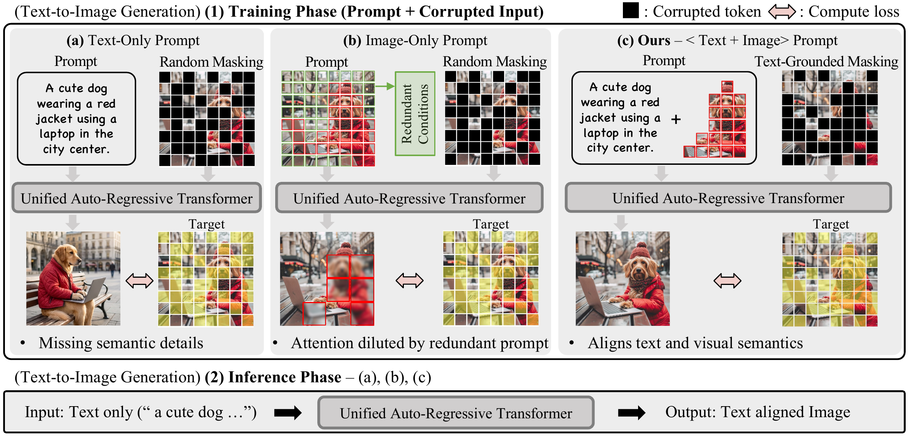
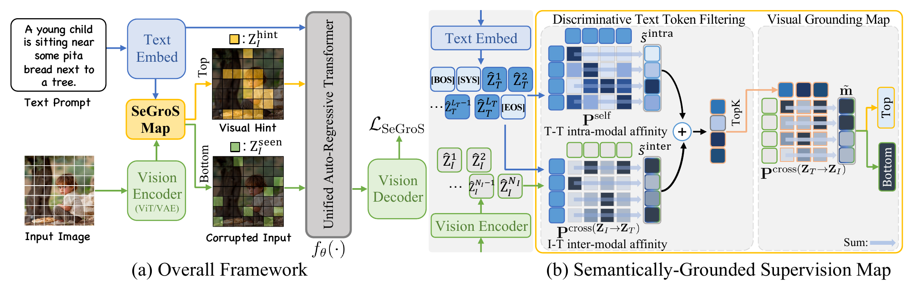
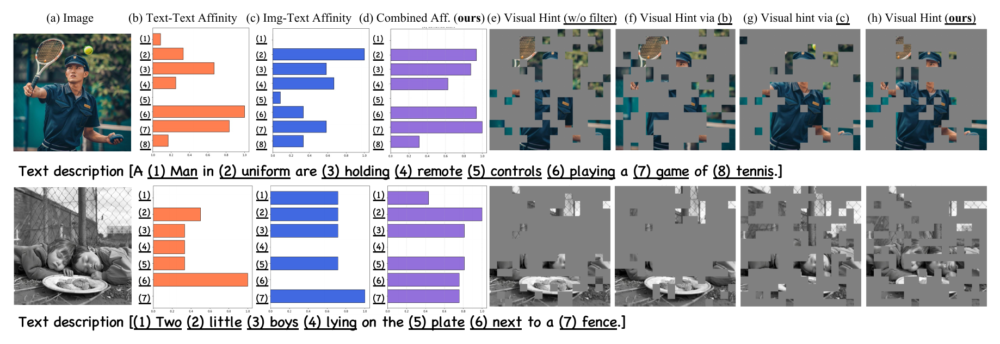
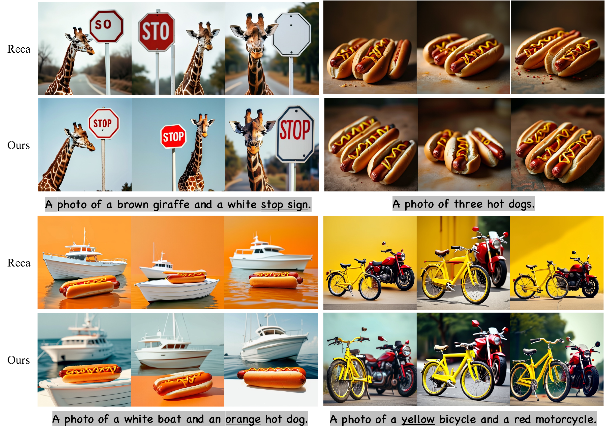

Unified Multimodal Models (UMMs) have emerged as a promising paradigm that integrates multimodal understanding and generation within a unified modeling framework. However, current generative training paradigms suffer from inherent limitations. We present Semantically-Grounded Supervision (SeGroS), a fine-tuning framework designed to resolve the granularity mismatch and supervisory redundancy in UMMs. At its core, we propose a novel visual grounding map to construct two complementary supervision signals. First, we formulate semantic Visual Hints to compensate for the sparsity of text prompts. Second, we generate a semantically-grounded Corrupted Input to explicitly enhance the supervision of masking-based UMMs by restricting the reconstruction loss to core text-aligned regions. Extensive evaluations on GenEval, DPGBench, and CompBench demonstrate that SeGroS significantly improves generation fidelity and cross-modal alignment across various UMM architectures.
Sparse text prompts leave fine-grained visual details unspecified, while dense image prompts can introduce redundant information. SeGroS grounds supervision in text-aligned image regions to provide informative visual hints and focus reconstruction on semantically relevant targets.


SeGroS combines intra-modal and inter-modal text affinities to identify discriminative text tokens and construct a visual grounding map. High-scoring image regions provide visual hints, while low-scoring regions remain visible in the corrupted input so reconstruction focuses on text-aligned targets.

Qualitative results and quantitative evaluation.

Text-to-image generation results from Table 1. Higher is better for all metrics.
| Model | Method | GenEval ↑ | DPG-Bench ↑ | CompBench ↑ | ||||||
|---|---|---|---|---|---|---|---|---|---|---|
| Single | Two | Count | Color | Position | Attr. | Overall | Overall | Overall | ||
| Fine-tuning dataset: MidjourneyV6 | ||||||||||
| Show-o-256 | w/o SFT | 97.4 | 63.3 | 52.1 | 82.3 | 14.2 | 30.3 | 56.6 | 70.65 | 73.58 |
| Show-o-256 | SFT* | 97.8 | 63.4 | 53.4 | 80.3 | 16.5 | 33.5 | 57.5 | 74.6 | 75.37 |
| Show-o-256 | Reca | 97.4 | 73.6 | 56.0 | 83.8 | 20.3 | 40.2 | 61.9 | 75.7 | 77.5* |
| Show-o-256 | Ours | 98.1 | 72.5 | 54.4 | 86.4 | 21.0 | 41.0 | 62.22 | 76.52 | 78.30 |
| Show-o-512 | w/o SFT | 97.2 | 80.3 | 61.9 | 78.2 | 27.3 | 52.3 | 66.2 | 82.21 | 80.53 |
| Show-o-512 | SFT* | 97.2 | 84.1 | 66.6 | 80.9 | 26.8 | 46.8 | 67.03 | 81.8 | 80.02 |
| Show-o-512 | Reca | 98.1 | 93.4 | 64.7 | 79.8 | 38.0 | 55.8 | 71.63* | 84.94 | 84.47 |
| Show-o-512 | Ours | 97.8 | 91.4 | 65.0 | 81.9 | 35.0 | 53.0 | 70.69 | 85.18 | 84.35 |
| OpenUni-1.6B | w/o SFT | 96.8 | 63.3 | 46.4 | 80.1 | 18.5 | 30.8 | 56.0 | 76.29 | 75.47 |
| OpenUni-1.6B | SFT* | 97.8 | 76.8 | 55.9 | 81.9 | 25.5 | 36.0 | 62.32 | 79.7 | 81.25 |
| OpenUni-1.6B | Reca | 96.6 | 85.4 | 52.5 | 84.3 | 46.5 | 50.8 | 69.33* | 80.45 | 83.1* |
| OpenUni-1.6B | Ours | 98.8 | 84.6 | 56.9 | 84.0 | 38.8 | 54.0 | 69.5 | 81.33 | 83.83 |
| OpenUni-3.6B | w/o SFT | 99.1 | 71.8 | 51.9 | 83.9 | 23.3 | 41.6 | 61.9 | 79.02 | 78.84 |
| OpenUni-3.6B | SFT* | 98.8 | 81.3 | 55.9 | 85.9 | 25.0 | 48.8 | 65.94 | 80.45 | 82.6 |
| OpenUni-3.6B | Reca | 99.1 | 92.7 | 52.3 | 87.1 | 43.8 | 70.3 | 74.1 | 82.75 | 86.0* |
| OpenUni-3.6B | Ours | 99.7 | 95.2 | 52.5 | 85.1 | 46.8 | 73.0 | 75.37 | 83.37 | 86.14 |
| Harmon-0.5B | w/o SFT | 99.7 | 80.5 | 55.8 | 86.7 | 32.2 | 49.7 | 67.6 | 80.12 | 80.34 |
| Harmon-0.5B | SFT* | 100 | 86.4 | 64.4 | 87.5 | 37.8 | 56.5 | 72.1 | 82.5 | 83.5 |
| Harmon-0.5B | Reca | 99.9 | 92.3 | 59.4 | 91.7 | 58.5 | 70.7 | 78.7 | 84.67 | 85.7* |
| Harmon-0.5B | Ours | 100 | 90.2 | 65.3 | 91.5 | 66.0 | 75.8 | 81.5 | 85.4 | 86.9 |
| Fine-tuning dataset: BLIP3o-60k | ||||||||||
| Harmon-1.5B | w/o SFT | 99.4 | 87.3 | 68.7 | 86.4 | 44.9 | 51.1 | 72.9 | 80.93 | 81.36 |
| Harmon-1.5B | SFT* | 99.1 | 94.7 | 77.8 | 86.4 | 78.3 | 74.0 | 85.0 | 85.6 | 87.32 |
| Harmon-1.5B | Reca | — | — | — | — | — | — | 85.2 | 86.5 | 87.2* |
| Harmon-1.5B | Ours | 100 | 97.7 | 79.1 | 90.4 | 83.5 | 81.3 | 88.66 | 86.58 | 88.08 |
* Results reproduced using the official implementations. Bold indicates the best score within each backbone. Shaded rows indicate SeGroS (Ours).
Harmon-1.5B fine-tuned on BLIP3o-60k. Results from Table 2; higher is better.
| Method | MME | POPE (Acc) | POPE (F1) | GQA | MMMU | SEED |
|---|---|---|---|---|---|---|
| w/o SFT | 1195 | 83.8 | 83.9 | 58.8 | 34.7 | 65.2 |
| SFT | 1210 | 84.0 | 84.1 | 58.5 | 35.3 | 65.1 |
| Reca | 1190 | 83.9 | 83.4 | 58.5 | 34.9 | 65.1 |
| Ours | 1217 | 84.5 | 84.2 | 58.7 | 36.0 | 65.5 |
@article{kim2026segros,
title = {Enhancing Alignment for Unified Multimodal Models via Semantically-Grounded Supervision},
author = {Kim, Jiyeong and So, Yerim and Choi, Hyesong and Hwang, Uiwon and Min, Dongbo},
journal = {arXiv preprint arXiv:2603.19807},
year = {2026}
}